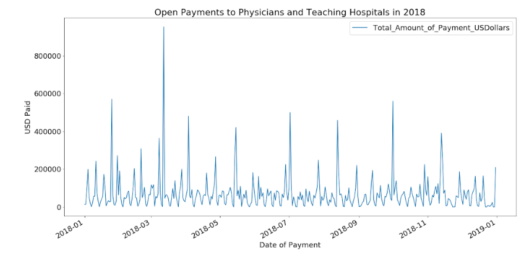
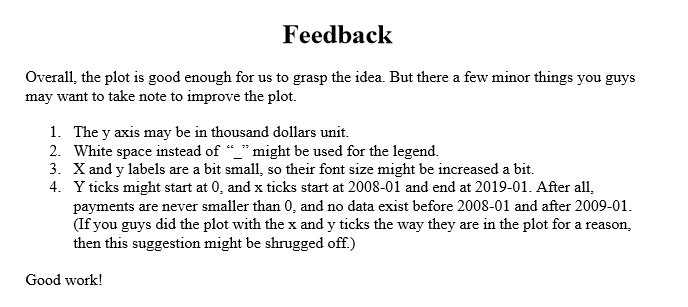
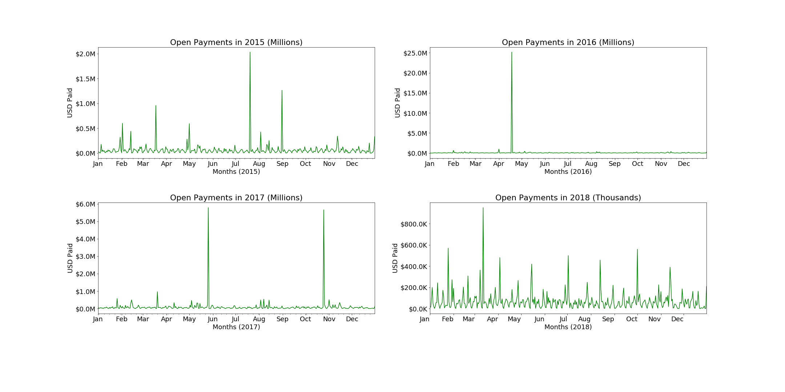

Acknowledgments
Resources Used:
TODO: (this should include people (besides TA's and Tyler) and online resources used
Peer Feedback:
TODO: We recieved feedback from Huu Minh Duc Nguyen and Zheng Ma.
Before Feedback:


After Feedback:
Our team incorporated as much of the feedback as possible. Our y-axis is in thousands and millions for each of our sub plots. We eliminated the legend, and increased our axis lables as much as possible. On the x-axis the plot starts right away without the white space on either side as it did before. Lastly, we replaced the numerical date with the abreviated months to make it easier to read.
